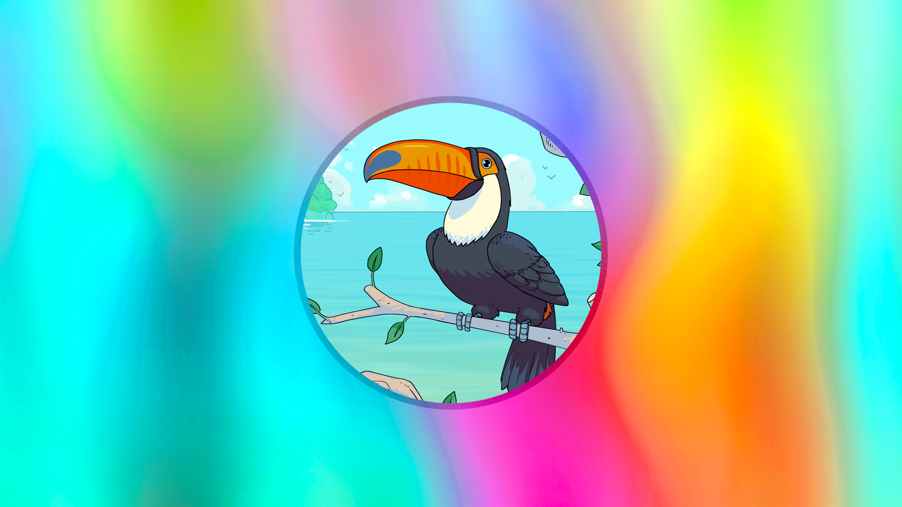

• 5 MIN READ • Kenny
White
Shell Governance and Tokenomics - Part 1
The first post about Shell Tokenomics. (This post is the first installment in a multi-part series) Last year on April 1, we brought you Toucanomics. This year, we give you tokenomics. Shell Protocol was ... [→]